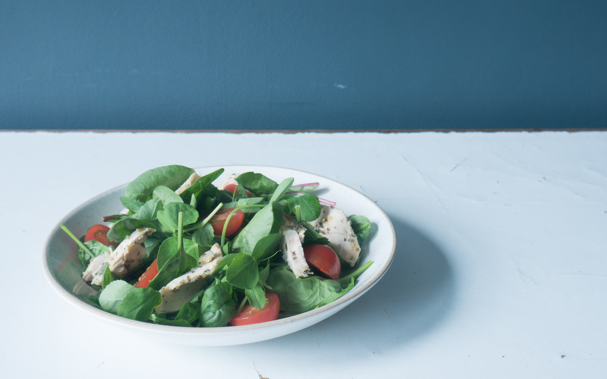
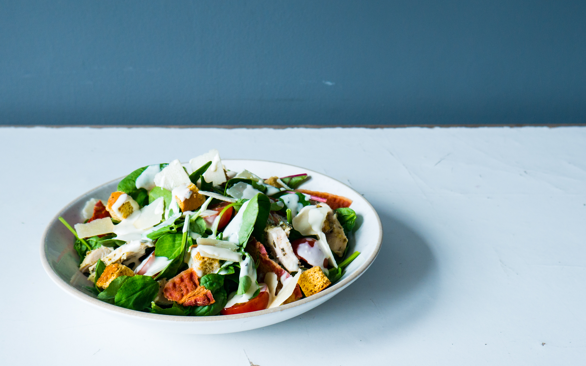

Design thinker and sense-maker working at The Kids in Berlin. I spend my time helping various clients reach their design, research, or culture goals and pursuing my own passion of critical design. Critical design is my outlet to tell stories that provoke a deeper questioning of how we as a society engage with technology and social issues.
When I’m not designing I am fascinated by audio storytelling, weird internet trends and make questionably bad music.
Get in Touch:
Fred@mildlyupset.com
A WIP Speculative Start-up Accelerator
Ventually, or Eventually, is a speculative start-up accelerator exploring trends, technology and culture through the lens of start-up culture. It aims to get away from the seriousness of academic speculative design and present ideas in a more experimental and informal way. Completed(ish) projects include a tinder-like freemium app to choose your designer baby and an AR application to help you lose weight.
See full project
The website is made of two distinct sides: a public-facing corporate side called ‘Ventually’ and a self-referential side called ‘Eventually’.
The ‘Ventually’ side of the website is the projects real face by aiming to challenge readers by showing them companies, ideas and futures that aim to convince through believability and tone. It presents all its ideas with (false) sincerity and Apple levels of confidence. The ‘Eventually’ aspect of the website is my sketchbook for this project, it aims to show my cultural and technological inspirations for each project and challenge the user through more provocative language.
Routes to both sides of the website can be accessed via the language selection of ‘EN’ or ‘META’.
A service that questions the notion that designer babies will only be a niche of the rich and not mundane nepotism.
See full project
With FauxCal enhance
Without FauxCal enhance


An augmented reality food app, focused on the intersection between consumption, aesthetics obsession and virtual value.
See full project
This project was not only started to experiment with how critical design is presented but also as a vehicle to promote collaboration between different disciplines. If you want to get involved, either with a startup idea, a skill that could help with communication design or maybe you just want to have a chat. Hit me up.
Get in Touch